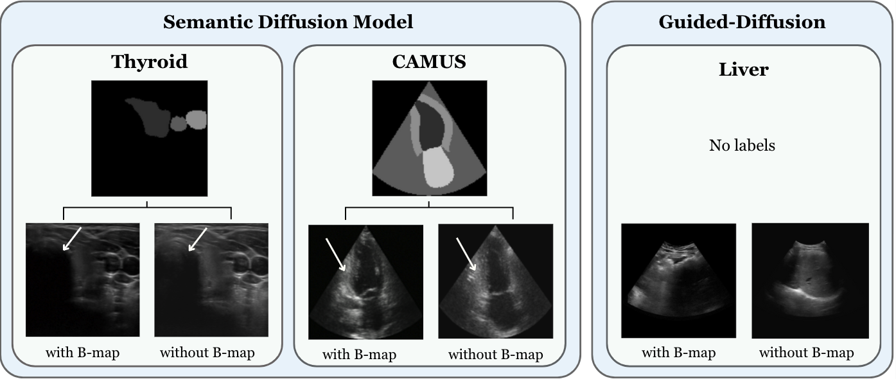

Diffusion as Sound Propagation: Physics-inspired Model for Ultrasound Image Generation
Marina Dominguez*, Yordanka Velikova*, Mohammad Farid Azampour, Nassir Navab
MICCAI 2024 (Oral Presentation) · arXiv:2407.05428
* equal contribution
Abstract
Deep learning workflows typically need large-scale labeled datasets, which are expensive to obtain for medical ultrasound. To mitigate the limited training data, we introduce a physics-aware diffusion process that mimics sound propagation via ultrasound-specific scheduler schemes. The model couples attenuation dynamics with B-map guidance to produce more realistic B-mode simulations and to better capture ultrasound-specific noise distributions. We demonstrate qualitative and quantitative improvements in plausibility and realism across multiple anatomical datasets.
Physics-guided diffusion


Results
B-map guidance delivers sharper simulations across SegThy, CAMUS, and liver cohorts.
Citation
If you find this work useful, please cite:
@misc{dominguez2024diffus,
title={Diffusion as Sound Propagation: Physics-inspired Model for Ultrasound Image Generation},
author={Marina Dominguez and Yordanka Velikova and Mohammad Farid Azampour and Nassir Navab},
year={2024},
eprint={2407.05428},
archivePrefix={arXiv},
primaryClass={eess.IV}
}